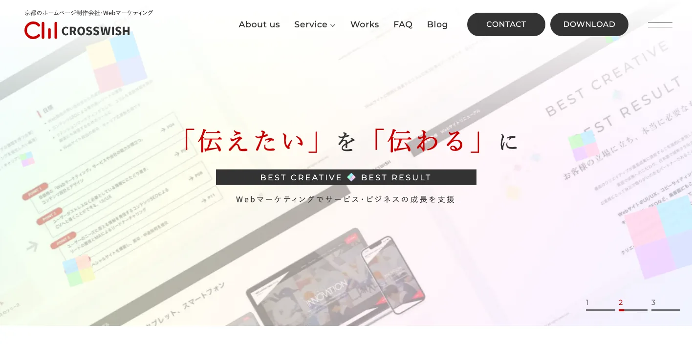
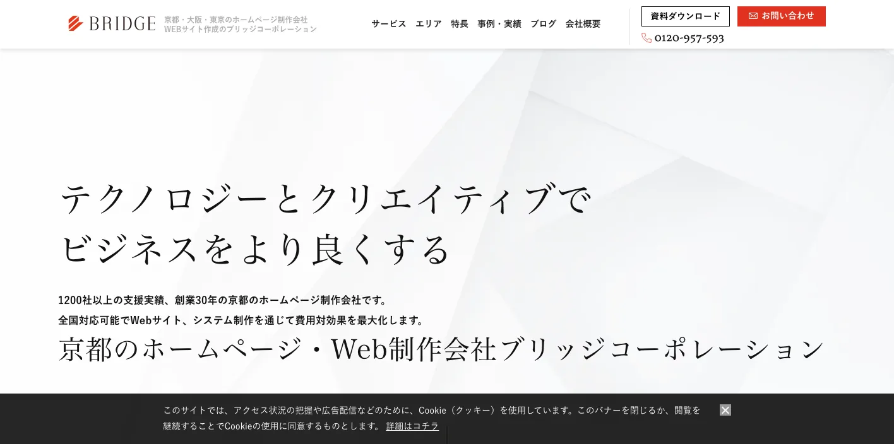
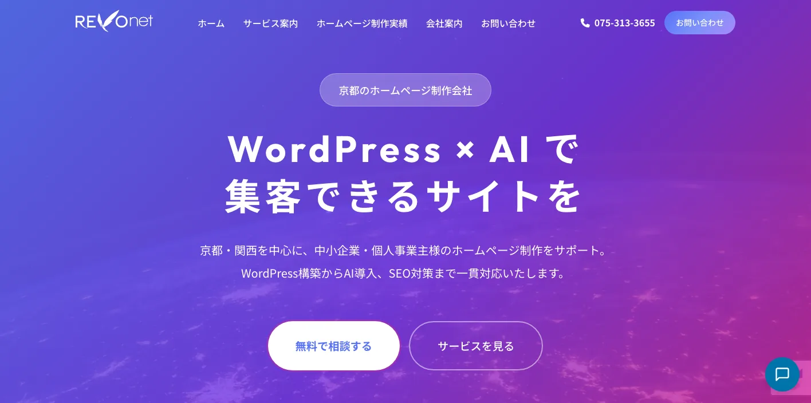
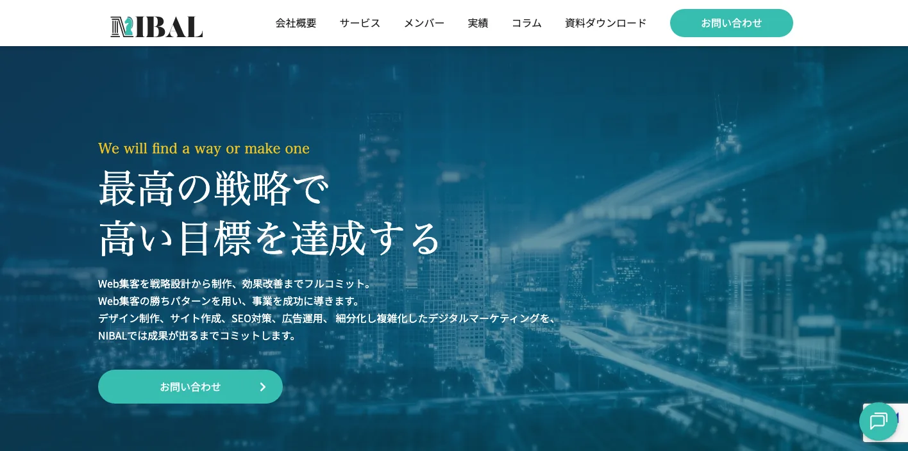
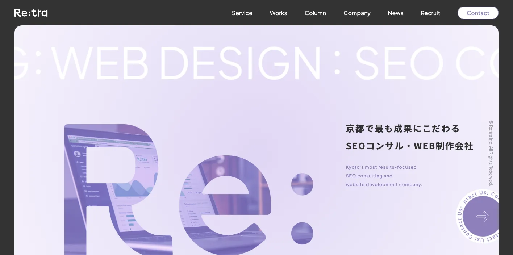
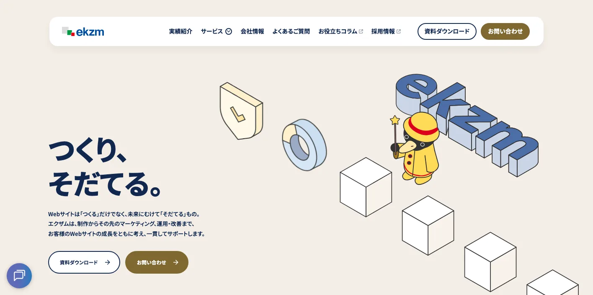
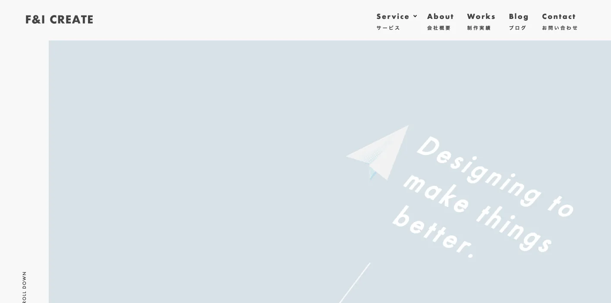
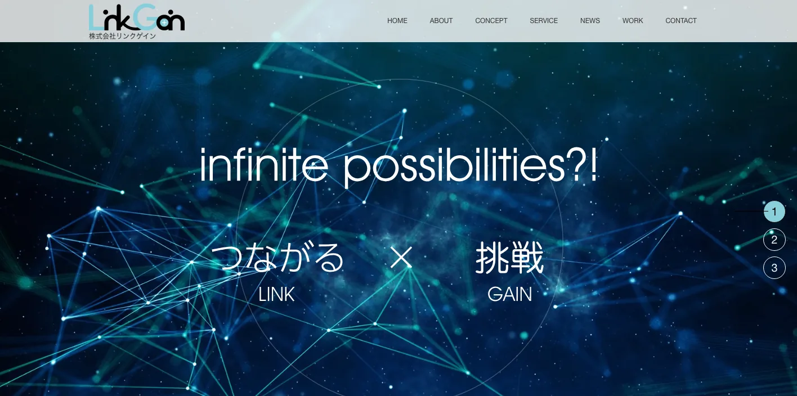
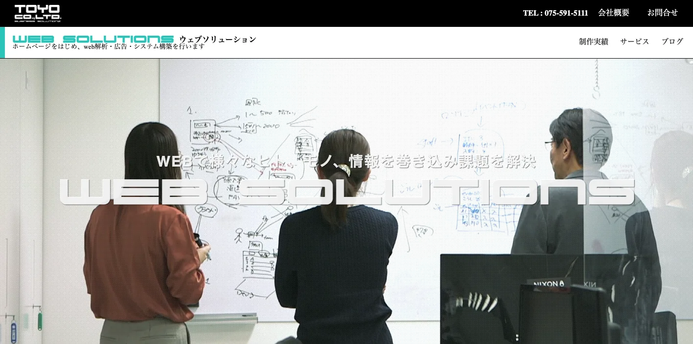

京都府でおすすめのLLMO会社10選｜費用相場と選び方もわかりやすく解説

京都府でLLMO会社を選ぶときは、「京都のホームページ制作会社」だけで探すと判断が雑になります。京都市中心部は観光、宿泊、飲食、大学、医療、士業、文化施設が重なり、宇治市・城陽市・京田辺市・木津川市・精華町は山城・けいはんなの研究開発や生活商圏、長岡京市・向日市は乙訓の住宅・BtoB、福知山市・舞鶴市・京丹後市は製造業、海の京都、採用、広域観光の文脈が強くなります。
京都府の推計人口資料では、令和8年3月1日現在の京都府人口が2,497,728人、京都市が1,427,895人と公表されています。京都府の令和6年観光入込客等調査では、観光消費額が2兆581億円、京都市を除く府域でも1,507億円とされています。さらに、けいはんな学研都市には150以上の施設、研究者等1万1千人超、人口25万人超の集積があると京都府が説明しています。
この記事では、京都府でLLMOに取り組むときに比較したい会社、選び方、費用相場をまとめます。基礎から確認したい方はLLMO対策の基礎記事、近隣商圏も比較したい方は滋賀県の比較記事、大阪府の比較記事、三重県の比較記事も参考にしてください。
目次

京都府でおすすめのLLMO会社10選
今回は、京都府内に拠点があり、Web制作、SEO、Webマーケティング、コンテンツ制作、システム開発、AI導入、多言語対応、運用改善などの公開情報を確認しやすい会社を中心に選びました。京都府内でLLMO専業を前面に出す会社はまだ多くありません。そのため、AIに引用される情報設計、FAQ、構造化データ、SEO、取材、更新運用まで広げて支援できるかを見ています。
京都府では、観光だけを見ても、京都市内の混雑・宿泊・飲食、宇治の茶文化、海の京都、森の京都、もうひとつの京都など、AIに聞かれる質問が違います。法人向けでも、大学・研究、医療、伝統産業、製造業、BtoB、採用広報で必要なページが変わります。まずは下の表で、自社の地域と目的に近い会社を絞ってください。
| 会社名 | 拠点・対応 | 向いている相談 |
|---|---|---|
| 株式会社クロスウィッシュ | 京都市中京区 | Web制作、SEO、MEO、広告、医療・教育・店舗の情報整理 |
| 株式会社ブリッジコーポレーション | 京都市中京区 | 大規模サイト、官公庁・大学・病院、Web戦略、運用改善 |
| レボネット株式会社 | 京都・関西対応 | WordPress、AIチャットボット、SEO、中小企業の集客改善 |
| 株式会社NIBAL | 京都市中京区 | SEO、Web広告、コンテンツ、ローカル/全国向けWeb集客 |
| 株式会社リトラ | 京都市西京区 | SEOコンサル、コンテンツマーケティング、制作後の改善 |
| 株式会社エクザム | 京都市中京区 | CMS、Webシステム、多言語、SEO、公共・文化・大学系サイト |
| 株式会社F&Iクリエイト | 京都市上京区 | Web制作、コンテンツ、印刷物、広告、ブランド表現 |
| 株式会社リンクゲイン | 京都市北区 | Web制作、運用、サーバー、映像、地域企業の情報発信 |
| 株式会社東洋 | 京都市山科区 | Web制作、解析、広告、システム、採用・EC・業務連携 |
| 株式会社LiKG | 全国対応 | LLMO診断、SEO連動、一次情報を使った記事制作 |
株式会社AIMAは京都本社の会社ではありませんが、全国対応でLLMO支援を提供しています。月額5万円のLLMO支援は初期費用なし・1ヶ月単位で始められ、質問設計、記事制作、引用チェックに絞って実務を進められます。京都市、宇治市、長岡京市、亀岡市、舞鶴市、福知山市、京丹後市のように商圏が分かれる場合も、まず無料LLMO診断で優先順位を確認できます。
株式会社クロスウィッシュ

株式会社クロスウィッシュは、京都市中京区に拠点を置くWeb制作・Webマーケティング会社です。公式サイトでは、Webサイト制作、SEO、Web広告運用、アクセス解析、競合分析、MEO対策、採用サイト制作、Shopify ECサイト構築などを確認できます。会社概要では、京都市中京区油小路三条上ル宗林町に所在地があることも公開されています。
京都府のLLMOでは、医療、教育、研究、店舗、観光、採用など、情報の正確さと見せ方の両方が必要です。クロスウィッシュは、SEOやMEO、WordPress、広告、アクセス解析まで一体で扱うため、京都市内のクリニック、学校、店舗、ホテル、サービス業が「AIにどう説明されるか」まで見直したい場合に向いています。
株式会社ブリッジコーポレーション

株式会社ブリッジコーポレーションは、京都を拠点に創業30年の実績を掲げるWeb制作会社です。公式サイトでは、累計1,200社以上、約50人体制、上場企業・官公庁・病院・学校などの実績、Webサイト制作、システム開発、Web広告、デジタルマーケティング、アクセス解析、Webブランディング、EC、SNS運用などが確認できます。
京都府では、大学、病院、文化施設、行政、観光団体のように、ページ数が多く、担当部署も多いサイトが少なくありません。LLMOでは、古いPDFや別部署のページに重要情報が分散していると、AIが正しく要約しにくくなります。大規模サイトや複数部門の情報整理、リニューアル、運用体制づくりまで相談したい場合に候補になります。
レボネット株式会社

レボネット株式会社は、京都・関西エリアの中小企業向けに、WordPressサイト構築、Webデザイン、SEO対策、AI導入を掲げる会社です。公式サイトでは、500件超の制作実績、20年の経験、AIチャットボット導入、WordPressプラグイン開発、MEO対策、Web集客支援などを確認できます。
京都府の中小企業では、問い合わせ対応、予約、採用、FAQ、商品説明が属人的になっているケースがあります。LLMOは、AIに答えさせる情報を整えるだけでなく、サイト上でも来訪者の疑問に答えられる形にする必要があります。WordPressを使って既存サイトを更新しやすくし、AIチャットボットやSEOも含めて小さく改善したい会社に向いています。
株式会社NIBAL

株式会社NIBALは、京都市中京区に本社を置くWebマーケティング会社です。公式サイトでは、SEO対策、Web制作、広告運用、Webコンサルティング、ローカルビジネスと全国向けビジネスの支援、コンテンツSEO、オウンドメディア運用などを確認できます。会社概要では、2021年設立と京都市中京区三条通新町西入ルの所在地も公開されています。
京都府では、京都市内だけでなく、宇治茶、伝統産業、BtoB、SaaS、研究開発、教育など、全国から問い合わせを取りたい事業もあります。NIBALは、SEOや広告、コンテンツ、Webコンサルを組み合わせているため、京都の地域名だけでなく、全国向けの課題キーワードでAIに引用される導線を作りたい会社に向いています。
株式会社リトラ

株式会社リトラは、京都のSEOコンサル・Webサイト制作会社です。公式サイトでは、SEOコンサルティング、Webサイト制作、Web広告、コンテンツマーケティング、データ分析、BIツール導入、Webマーケティング支援などを確認できます。京都でWebに取り組む会社の課題を前提にした支援も発信しています。
京都府のLLMOでは、ページを増やすだけでは足りません。どの検索意図に答えるのか、既存ページのどこが弱いのか、成果につながる導線があるのかを見直す必要があります。SEOと分析を軸にした改善を掲げているため、既存サイトの記事やサービスページをAI検索向けに再設計したい会社に向いています。
株式会社エクザム

株式会社エクザムは、京都市中京区に本社を置くWeb制作会社です。公式サイトでは、1996年からホームページ制作・受託制作・開発業務を行ってきたこと、Webサイト制作、システム・アプリケーション開発、マーケティング、SEO、写真・動画撮影・編集、多言語翻訳、サーバー、メールサービスなどが確認できます。
京都府では、文化施設、観光、大学、医療、公共性の高い団体など、情報量が多く、CMSや多言語、セキュリティ、運用ルールが重要なサイトが多くあります。エクザムは、制作、システム、SEO、多言語、写真・動画まで扱うため、AIに引用される情報の土台から整えたい組織に向いています。
株式会社F&Iクリエイト

株式会社F&Iクリエイトは、京都のデザイン・Web制作会社です。公式サイトでは、Webサイトデザイン、CMS構築、ECサイト対応、アクセス解析、運用・保守、広告運用、コンテンツマーケティング、印刷物、グラフィック制作、システム開発などを確認できます。
京都府の伝統産業、食品、アパレル、観光、地域ブランドでは、Webだけでなく、写真、文章、パンフレット、店頭の説明まで含めて世界観をそろえる必要があります。LLMOでは、AIがブランドの特徴を短く要約するため、公式サイトに素材、工程、作り手、価格、購入方法、法人対応を整理しておくことが大切です。
株式会社リンクゲイン

株式会社リンクゲインは、京都市北区に拠点を置くWeb総合サポート会社です。公式サイトでは、ホームページ制作、運用、Webプロモーション、サーバー、ドメイン、プログラム開発、継続サポート、デザイン、映像制作などを確認できます。所在地は京都市北区紫竹下緑町と公開されています。
京都府の地域企業では、サイト公開後の更新が止まり、AIに読ませたい情報が古いまま残ることがあります。観光、店舗、工務店、設備会社、採用、地域イベントでは、写真や動画も含めた更新が重要です。Web制作から運用、サーバー、映像まで見られるため、社内でWeb担当を置きにくい会社に向いています。
株式会社東洋

株式会社東洋は、京都・滋賀・奈良エリアを中心にWebサイト制作・保守管理を行うWebソリューション部門を持つ会社です。公式サイトでは、Web解析、広告、システム構築、WordPress制作、サーバー管理、セキュリティ、採用サイト、EC、商品管理システムなどが確認できます。会社概要では、京都市山科区東野八反畑町の本社所在地も公開されています。
京都府では、製造業、卸売、士業、医療、学校、EC、採用のように、Webサイトと業務システムがつながる場面があります。LLMOでは、AIに答えさせるFAQだけでなく、商品管理、在庫、採用フォーム、問い合わせ、セキュリティも無視できません。WebとITソリューションをまとめて相談したい会社に向いています。
株式会社LiKG

株式会社LiKGは、全国対応のLLMOコンサルティングを提供する会社です。公式サイトでは、LLMO診断、LLMO×SEOコンサルティング、EEAT強化記事制作、独自データ活用、2,000名超のプロネットワークなどを確認できます。料金も、LLMO診断プラン10万円から、LLMO×SEOコンサルティングプラン30万円から、EEAT強化記事制作5万円/1記事からと公開されています。
京都府内の制作会社に現地取材やWeb運用を任せながら、AI検索での露出状況や記事設計だけを専門会社に見てもらいたい場合に候補になります。観光、伝統産業、大学研究、BtoB、採用広報などで、一次情報をどう増やすかを整理したい会社に向いています。
会社情報は各社公式サイトの公開情報を確認しています。京都府の人口は京都府「京都府の推計人口及び世帯数」と令和8年3月1日現在の月報、観光は京都府「令和6年京都府の観光入込客数及び観光消費額について」、文化財は京都府「統計で見る京都府の文化」、けいはんな学研都市は京都府「けいはんな学研都市の概要」を参照しました。
京都府のLLMO会社を比較する際のポイント
京都府のLLMO会社選びでは、京都市の観光地だけを見てはいけません。京都市中心部、山城・乙訓、けいはんな、北部では、AIに答えさせるべき質問が大きく変わります。ここでは、比較するときに見るべきポイントを地域と業種に分けて整理します。
京都市中心部は、観光・店舗・医療・士業の具体的な質問に答えられるかを見る
京都市中心部では、宿泊、飲食、観光施設、クリニック、士業、スクール、文化施設の情報がAI検索で比較されやすくなります。旅行者は「京都駅から何分か」「混雑時はどうするか」「雨の日でも行けるか」「英語対応はあるか」「予約は必要か」のように具体的に聞きます。地域住民は、料金、診療時間、駐車場、相談の流れ、口コミに近い情報を見ます。
この地域で会社を選ぶなら、営業時間、アクセス、料金、予約、よくある質問、写真、Googleビジネスプロフィール、口コミ対策まで横断して整えられるかを見てください。MEOや広告だけでなく、AIに説明される文章の土台を作れる会社が向いています。
観光・宿泊・伝統産業は、多言語と一次情報を分けて確認する
京都府の観光は、清水寺や嵐山だけではありません。宇治、伏見、亀岡、南丹、舞鶴、天橋立、伊根、京丹後など、地域ごとに移動手段、季節、滞在時間、文化背景が違います。AI検索では「子連れ」「雨の日」「朝早く」「混雑回避」「英語で予約」「京都駅から日帰り」のような条件付き質問が増えます。
観光業や伝統産業で比較するなら、翻訳できるかだけでなく、公式サイトにしかない一次情報を作れるかを見ます。素材、工程、見学、体験、予約、キャンセル、所要時間、注意点、周辺施設を整理できる会社のほうが、AIに誤解されにくくなります。
大学・研究・医療は、専門性を一般向けに言い換えられるかを見る
京都府には大学、研究機関、医療機関、産学連携、けいはんな学研都市の文脈があります。専門性の高いサイトでは、研究成果、治療内容、技術、助成制度、共同研究、採用情報などが別々のPDFや古いページに分かれがちです。AIはその断片を拾って要約するため、情報の古さや説明不足がそのまま誤解につながります。
この分野では、専門家に確認しながら一般向けに説明できる制作体制が重要です。監修者情報、更新日、用語解説、FAQ、問い合わせ導線、研究や実績の出典を整理できる会社を選ぶとよいです。CMSやセキュリティ、多言語も必要になるため、技術面の対応力も見てください。
山城・乙訓・けいはんなは、生活商圏と研究開発を混ぜない
宇治市、城陽市、京田辺市、木津川市、精華町、長岡京市、向日市、大山崎町では、住宅地、教育、医療、店舗、宇治茶、製造業、研究開発、BtoBが重なります。同じ京都府南部でも、生活者向けサービスと研究開発型の法人営業では、必要なページがまったく違います。
この地域でLLMO会社を選ぶなら、地域名を増やすだけでなく、誰の質問に答えるのかを切り分けられるかを見てください。生活者向けなら料金、予約、アクセス、口コミに近い不安を整理します。BtoBなら、技術、対応工程、品質管理、導入事例、共同研究、問い合わせ前に必要な条件を整理します。
中丹・丹後・南丹は、採用・移動・季節性まで説明できるかを見る
福知山、舞鶴、綾部、京丹後、宮津、与謝野、南丹、亀岡では、製造業、物流、観光、一次産業、採用、移住、広域アクセスが重要になります。AI検索では「京都市から行けるか」「冬でも営業しているか」「車が必要か」「工場見学できるか」「未経験採用はあるか」のような質問が出やすくなります。
この地域では、京都市内向けの観光記事や汎用SEOだけでは足りません。移動時間、季節、採用条件、現場の写真、仕事の流れ、地域で働く理由を出せる会社を選ぶと、AIにも人にも伝わりやすくなります。
県内会社と全国対応会社は、役割を分けて使う
京都府内の会社は、現地取材、写真撮影、観光や伝統産業の文脈、行政・大学・地域企業との距離に強みがあります。一方で、LLMO診断、AI検索の露出調査、構造化データ、競合比較、記事制作の運用設計は、全国対応会社のほうが経験を持っている場合があります。
現実的には、県内会社に制作・撮影・運用を任せ、LLMOの診断や記事設計だけを専門会社に依頼する形もあります。京都府では、地域を知る会社とAI検索を知る会社を分けて考えると、無駄な制作費を避けやすくなります。
京都府のLLMO会社に依頼する費用相場
LLMOの費用は、記事の本数だけでは決まりません。京都府では、観光・宿泊の多言語情報、大学・医療の専門情報、伝統産業の一次情報、けいはんなの研究開発、北部の採用広報、ECや予約システムまで関わることがあります。ここでは、依頼内容ごとに費用感を整理します。
診断だけなら、まずは質問の棚卸しが中心
最初の診断は、無料から10万円前後までが目安です。やることは、AIに聞かれそうな質問を洗い出し、自社サイトが答えられているかを確認することです。京都市のホテルなら「アクセス」「混雑」「英語対応」、宇治の店舗なら「茶の種類」「体験予約」、研究開発企業なら「対応技術」「共同研究」「導入事例」を見ます。
AIMAの無料LLMO診断のように、最初に弱いページや優先順位を確認してから依頼範囲を決める方法もあります。いきなり大型リニューアルをするより、まずはAIに答えられていない質問を見つけるほうが安全です。
月額5万〜15万円は、既存サイトを育てる段階
月額5万〜15万円ほどでは、既存ページの修正、FAQ追加、記事制作、内部リンク、構造化データの簡易対応、引用チェックなどが中心になります。小規模店舗、士業、地域サービス、観光施設、採用ページの改善なら、この価格帯から始めやすいです。
京都府では、地域名を細かく分けるだけでもAIが理解しやすくなることがあります。たとえば「京都府対応」だけでなく、「京都市中心部」「宇治・伏見」「長岡京・向日」「けいはんな」「福知山・舞鶴・京丹後」といった単位で説明を整える方法です。ただし、地名だけ変えた同じ文章の量産は低品質になりやすいため避けましょう。
月額15万〜30万円は、競合調査と構造改善まで含める段階
月額15万〜30万円では、AI検索で競合がどう引用されているか、どのページが不足しているか、既存記事をどう直すか、サイト構造をどう変えるかまで見ます。観光、医療、大学、BtoB、伝統産業では、単発の記事よりも、カテゴリ設計、FAQ、事例、監修者情報、引用元の整理が重要になります。
この価格帯では、LiKGのようにLLMO診断やLLMO×SEOコンサルティングを明示している会社、または京都府内のSEO・制作会社と組み合わせる進め方が現実的です。AIに選ばれるには、ページ単体ではなくサイト全体の説明力を上げる必要があります。
多言語・撮影・EC・予約・システムを含めると総額は大きく変わる
ホームページの新規制作、リニューアル、写真撮影、動画、多言語翻訳、EC、予約システム、採用サイト、業務システム連携まで含めると、総額は数十万円から数百万円まで広がります。これはLLMO費用というより、事業の情報基盤を作る費用です。
京都府では、観光業なら写真と移動情報、伝統産業なら素材・工程・購入方法、大学・医療なら専門用語の説明、製造業なら設備・品質・納期、採用なら社員の声が重要になります。既存サイトが古い場合は、LLMO記事だけを追加しても限界があります。
一次情報づくりには、取材と確認の費用を見込む
京都府で特に費用を見込むべきなのは、一次情報づくりです。観光ならモデルコースや季節情報、伝統産業なら職人・素材・工程、大学や研究機関なら専門家確認、製造業なら設備や品質管理、採用なら社員インタビューが必要です。AIは、公式サイトにしかない情報を引用しやすく、他サイトにもある一般論だけでは選ばれにくくなります。
安く始めるなら、毎月1つのテーマだけを深く整える方法が現実的です。1ヶ月目はFAQ、2ヶ月目は事例、3ヶ月目は料金と相談の流れ、4ヶ月目は地域別ページというように進めると、重複を避けながらサイトを育てられます。
京都府のLLMO会社に関するよくある質問
京都府のLLMO会社に依頼する意味はありますか？
あります。京都府は、京都市中心部の観光・大学・医療、山城・乙訓の生活商圏、けいはんなの研究開発、丹後・中丹の製造業や観光で検索意図が大きく変わります。全国向けの一般記事だけでは、AIが地域ごとの違いを理解しにくくなります。
京都府内の会社でないとLLMOは任せられませんか？
県内会社でなくても依頼できます。ただし、現地取材、写真撮影、観光動線、伝統産業の背景、大学・研究機関との関係などは京都を理解している会社が進めやすい場合があります。AI検索の診断、構造化データ、競合調査、記事設計は全国対応会社でも進められます。
京都市内と京都府北部では、対策内容は変わりますか？
変わります。京都市内は観光、医療、士業、大学、店舗、宿泊、飲食の質問が多く、北部では製造業、一次産業、海の京都、移動手段、季節観光、採用の質問が増えます。同じLLMOでも、作るべきFAQや事例ページは変わります。
観光業や宿泊業でもLLMOは必要ですか？
必要です。旅行者はAIに、混雑、アクセス、所要時間、雨の日、子連れ、英語対応、予約前の注意点を具体的に聞きます。公式サイトに情報が整理されていないと、AIは旅行サイトや口コミサイトを優先しやすくなります。
大学・研究・医療系のサイトでもLLMOは使えますか？
使えます。京都は大学、研究機関、医療、産学連携の文脈が強い地域です。専門用語を一般向けに説明するページ、研究成果の社会実装、問い合わせ導線、監修者情報、FAQを整えることで、AIに誤解されにくくなります。
伝統産業や老舗企業は、どんな情報を出すべきですか？
歴史だけでなく、素材、工程、職人、品質管理、購入方法、修理、法人対応、海外発送、見学可否などを整理するとよいです。AIは「何が本物なのか」「どこで買えるのか」「ギフトに向くか」のような質問に答えるため、公式サイトの一次情報が重要です。
京都府のLLMO費用はどれくらい見ておけばよいですか？
小さく始めるなら無料診断から月額5万〜15万円、本格的に競合調査やサイト構造改善まで行うなら月額15万〜30万円以上を見ておくと現実的です。多言語、撮影、観光モデルコース、EC、予約、業務システム連携を含む場合は別予算になります。
まず何から始めればよいですか？
最初に、AIに聞かれそうな質問を地域別に分けます。京都市内、宇治・伏見、乙訓、けいはんな、丹後・中丹では質問が違います。次に、自社サイトがその質問に答えられているかを確認し、FAQ、料金、事例、アクセス、専門家情報から直すのが現実的です。
京都府でLLMO会社を選ぶなら、観光地名だけでなく質問の種類を分けることが重要です
京都府のLLMO会社選びで一番大事なのは、「京都」という大きなブランドに頼りすぎないことです。京都市中心部、宇治・伏見、乙訓、けいはんな、福知山・舞鶴・丹後では、検索する人の目的が違います。観光客、地域住民、研究者、法人担当者、求職者では、AIに聞く質問も違います。
最初にやるべきことは、会社探しではなく質問の整理です。「誰が、どの地域から、何を比較して、どんな不安を持って問い合わせるのか」を決めると、必要な会社のタイプが見えてきます。県内会社に制作や取材を任せるのか、全国対応会社にLLMO診断を任せるのか、AIMAのような月額支援で小さく始めるのかも判断しやすくなります。
京都府でLLMOを始めるなら、まずは重要地域を1つ選び、その地域のFAQ、サービスページ、事例ページから整えるのがおすすめです。広げるのはその後で十分です。京都府では、地域名よりも質問の種類を分けられる会社を選ぶことが、AI検索で見つけられる近道です。